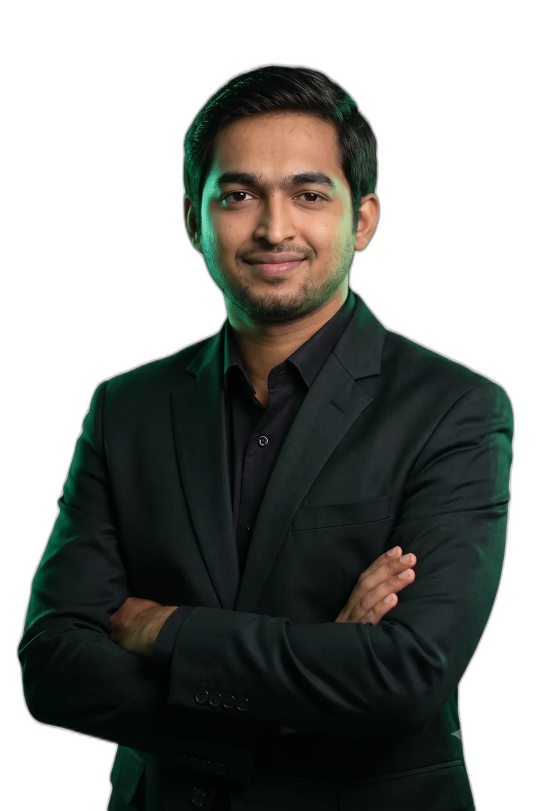
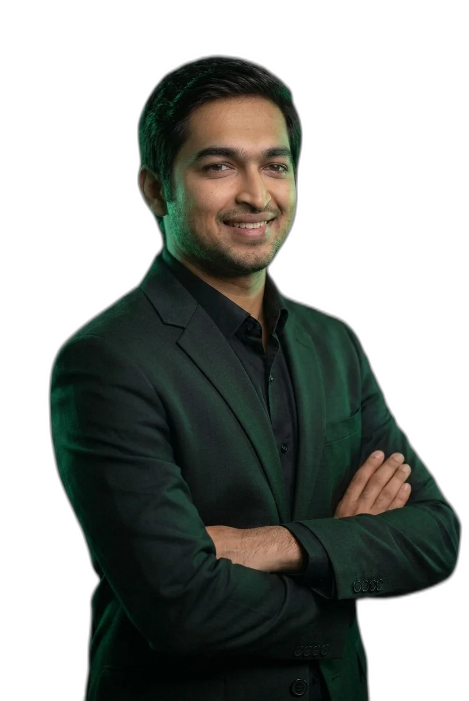

2013
Mumbai, India
Where curiosity became circuits
B.E. Electronics Engineering, University of Mumbai — Vidyalankar Institute of Technology. Embedded systems and integrated circuits light the first spark.

PATIL
I design, nano-fabricate, and test photonic and optoelectronic devices — the light-speed hardware beneath next-generation computing, communication, and sensing.
My doctoral work at George Washington University helped establish strainoptronics — bending 2D crystals to control how they see light — published in Nature Photonics and now cited more than 360 times. Along the way I invented an automated 2D Material Transfer System that Applied Physics Reviews named a Featured Article of the Year.
Today I take the same rigor from the cleanroom to the concrete: leading the deployment of autonomous mobile robot fleets in live warehouses — customers, infrastructure, research, end to end.
B.E. Electronics Engineering, University of Mumbai — Vidyalankar Institute of Technology. Embedded systems and integrated circuits light the first spark.
M.S. Computer Engineering at The George Washington University — VLSI, MEMS, and a first encounter with photonics that changes everything.
Doctor of Philosophy in Computer Engineering at GWU. Designing, fabricating, and testing nanophotonic devices at >100 GHz test benches.
Strain-engineered MoTe₂ photodetector for silicon photonic circuits. Journal Cover Page Award · 360+ citations · covered by Science Daily and Phys.org.
The 2D Material Transfer System — Featured Article of the Year. US patent received for manufacturing strained-2D photonic devices.
Research faculty at Dept. of Electrical & Computer Engineering, University of Florida, Gainesville — Photonic AI accelerators, Modulators, and Optical Logic Gates.
Lead Robotics Research Engineer. End-to-end deployment and scaling of autonomous mobile robot fleet solutions and research in production warehouses.
Photonic computing meets embodied machines — hardware that thinks in photons and acts in the physical world.
1,019 citations · h-index 14 · Google Scholar, July 2026 ↗
Design, nano-fabrication, and characterization of on-chip optical devices — modulators, detectors, resonators — measured on ultra-high-bandwidth benches beyond 100 GHz.
Atomically thin semiconductors — MoTe₂, InSe, graphene, MXenes — integrated onto photonics, with mechanical strain as a design dial for how they absorb and emit light.
Neural networks that run on light — optical logic gates, femtojoule-per-bit modulators, and hybrid optical-electronic processors for computing at photon speed.
AMR, AGV, and UGV systems taken from applied research to production — fleet behavior, warehouse infrastructure integration, and the customer engagements that make them stick.
The 2D Material Transfer System (2DMTS): an automated, AI-assisted robotic platform that lifts and places atomically thin flakes — accurately, repeatably, without contamination — turning a dark art of nanofabrication into a process.
Strainoptronics: stretch a 2D semiconductor and its band structure moves — so a MoTe₂ flake draped over a silicon waveguide becomes a high-responsivity photodetector at telecom wavelengths. Published in Nature Photonics; protected by a US patent family.
Photonic AI hardware: coupling-based ITO modulators reaching toward 1 fJ/bit, reconfigurable optical logic gates, and hybrid optical-electronic neural networks that untangle structured light through atmospheric turbulence.
At HUMRO, the laboratory discipline goes to work: leading end-to-end deployment and scaling of autonomous mobile robot fleets in live warehouse environments — customer engagements, cross-functional teams, infrastructure integration, and the applied research that keeps the fleet getting smarter.
“Imagination is more important than knowledge. Knowledge is limited. Imagination encircles the world.”
Research collaborations, robotics deployments, speaking, or a hard problem that needs both a scientist and an engineer — the door is open.
Your message is on its way — I read every note myself and will get back to you soon.